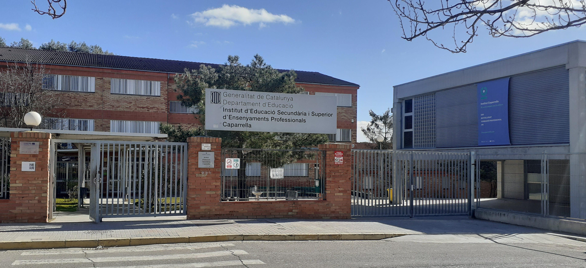

© 2026. Javier Royes Turmo
 Javier Royes Turmo
Javier Royes Turmo
 @viichu_00
@viichu_00

26-02-2026, 19:10
Exámenes de inglés en la clase de DAM
Hoy, el profesor de inglés ha dado comienzo a los últimos exámenes de inglés que han tenido lugar en la clásica aula de clase. Los alumnos se someten a la última prueba en la que juegan hasta 3 Resultats d'Aprenentatge, divididos en 4 language skills (Writing, Listening, Reading y Grammar & Vocabulary). El licenciado en filología inglesa, Javier Royes Turmo, se perfila como claro candidato a sacar un 10 en todos los exámenes. Pero a este pobre alumno le traicionan un poco los nervios pre-examen. También hay varios alumnos que se la juegan y van a ser capaces de llegar hasta las más últimas consecuencias, incluyendo entre ellas la copia a otros. De ahí que varios alumnos han sacado notas fuera de su común rendimiento. Fue sospecho el último examen, ¿no? Pues ale, ¡que empiece el show de exámenes!